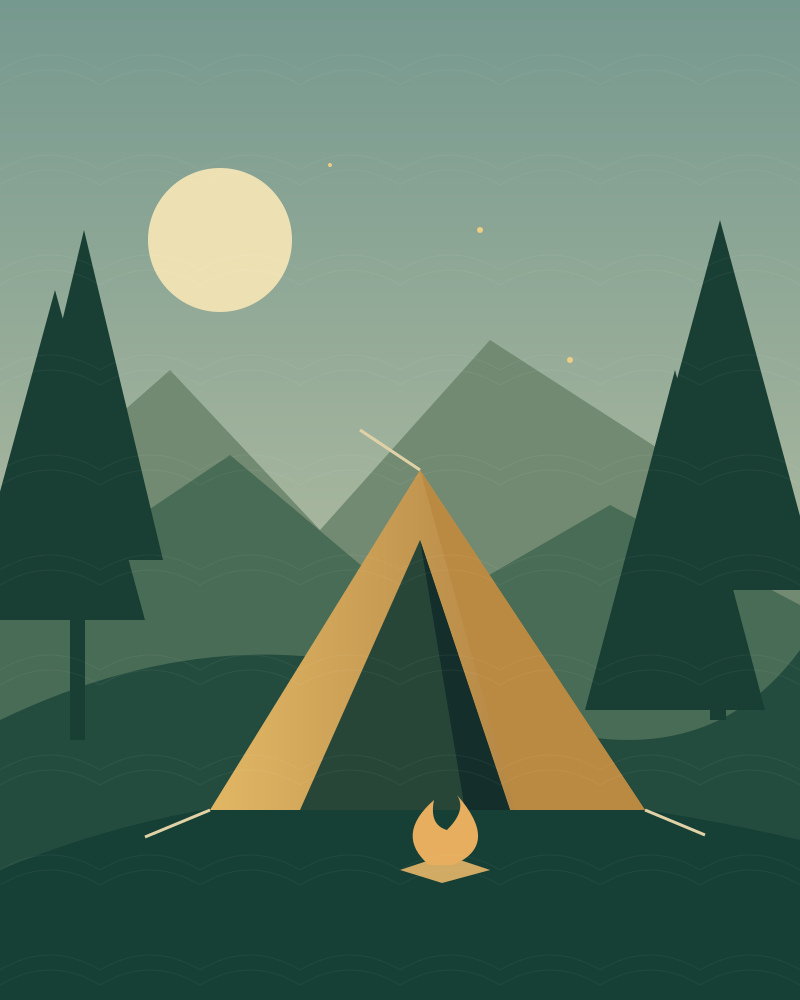

مهارات ومعسكرات
التعاون في الحياة الخلوية، تنظيم المهام، والاعتماد على النفس؛ خبرات تُبنى خطوة بخطوة.
جامعة الريادة للعلوم والتكنولوجيا · مدينة السادات
هنا تبدأ حكاية الجوالة؛ مغامرة تتعلّم فيها، وفريق تنتمي إليه، وفرصة لتترك أثرًا طيبًا في مجتمعك.
نتعلّم بالممارسة.
ونكبر معًا.

01 — تعرّف على العشيرة
الجوالة تجربة تجمع بين التعلّم والخدمة والمغامرة. من العمل في فريق إلى تحمّل المسؤولية، كل تجربة تفتح بابًا لمهارة جديدة وعلاقات تدوم.
في جامعة الريادة للعلوم والتكنولوجيا، تعكس مشاركات الجوالة اهتمام الجامعة بتنمية شخصية الطالب إلى جانب دراسته. وقد وثّق الموقع الرسمي مشاركة وفد الجامعة في برنامج النشاط الصيفي الكشفي بالإسكندرية.
تعرّف على الجامعة من موقعها الرسمي ↗02 — حياة الجوالة
مسارات تعبّر عن روح الجوالة
وما يمكن أن تضيفه لرحلتك الجامعية.
التعاون في الحياة الخلوية، تنظيم المهام، والاعتماد على النفس؛ خبرات تُبنى خطوة بخطوة.
شهدت المشاركة المنشورة للجامعة تدريبًا على التجديف والتعامل مع القوارب ومهارات ميدانية بحرية.
نتعلّم الإصغاء، نتقاسم المسؤولية، ونفهم كيف تتحول جهود الأفراد إلى إنجاز لفريق كامل.
03 — من الميدان
شارك وفد جوالة الجامعة في برنامج بالمركز البحري محمد أنور عبد اللطيف، نظمته جمعية الكشافة البحرية المصرية — فرع المنوفية. جمع البرنامج بين التدريب البحري والزيارات الثقافية، ومنها زيارة قلعة قايتباي.
اقرأ الخبر الأصلي وشاهد الصور ↗من عدسة الفريق
04 — مكانك بيننا
مهتم بالجوالة؟ قدّم طلبك لفريق المشروع، واحتفظ بكود المتابعة للاطلاع على حالته ورد الإدارة.
تقديم طلب أو متابعة طلبك ↗التسجيل في المشروع الطلابي لا يُعد موافقة رسمية من الجامعة.استفسر من إدارة الأنشطة الطلابية عن المتطلبات وبرامج التعريف المتاحة للطلاب الجدد.
تابع إعلانات الجامعة الرسمية وإدارة الأنشطة الطلابية. لا يعرض هذا المشروع جدول تسجيل أو مواعيد معتمدة.
جامعة الريادة للعلوم والتكنولوجيا، مدينة السادات، محافظة المنوفية، المحور المركزي.